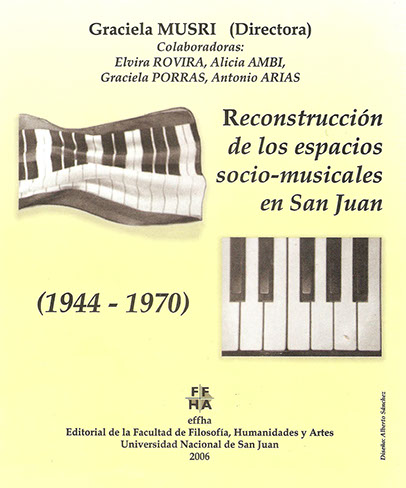

Publicación del Proyecto Reconstrucción de los espacios socio-musicales en San Juan (1944 - 1970)
desarrollado entre 2003 y 2005 y dirigido por Fátima Graciela Musri en el Gabinete de Estudios
Musicales. Se editó en la Editorial de la Facultad de Filosofía, Humanidades y Artes en 2007. Cuenta con
capítulos de Elvira Rovira, Graciela Porras, Alicia Ambi, Antonio Arias y Fátima Graciela Musri.
El propósito de poner en valor la historia de la música local llevó a investigar las prácticas musicales
del pasado en varios ámbitos sociales de la ciudad de San Juan. Se abarcó el lapso entre el catastrófico
sismo de 1944, que interrumpió su vida cotidiana e institucional, hasta la inauguración del Auditorio
“Juan Victoria” en 1970 y la creación de la Orquesta Sinfónica de la Universidad Nacional de San Juan en
1974. Se indagó la circulación de géneros populares y académicos, prestando mayor atención a los
circuitos de radiodifusión y de enseñanza-aprendizaje.
El libro tiene en principio una intención didáctica, puesto que va dirigido en primer lugar a nuestros
alumnos de música, con la esperanza de que les sea útil en el aprendizaje y ejercicio de la
investigación musicol-lgógica y en el abordaje de la Historia de la Música local; en segundo término a los
músicos y sus descendientes que se encontraron involucrados en el proceso histórico-musical que aquí
estudiamos; por último a todos los interesados en recordar y revalorizar el patrimonio cultural cuyano.
CONTACTO
gmusri@outlook.com
Editorial FFHA
ISBN: 950-605-462-5
San Juan
2006